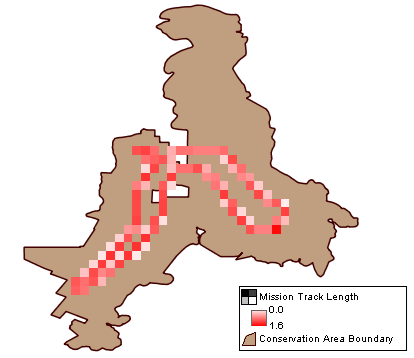

Consultas em grade calculam um valor agregado para cada célula em uma grade. Os resultados são exibidos em uma tabela (um registro por célula) e no mapa (com um gráfico raster).
 |
Mapa de Consulta em Grade de Exemplo |
Os valores calculados incluem valores relacionados ao modelo de dados (número total de observações, idade média, etc.), número de missões, número de pesquisas ou duração da trilha da missão.